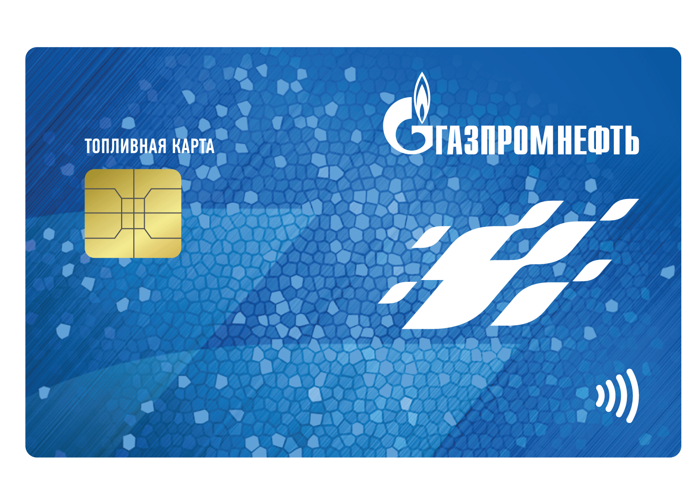
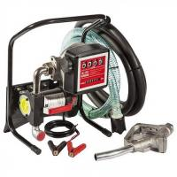

Смарт карта на бензин: подарочная, скидочная и бонусная
 Перейти к контенту Бизнес обзор
Правовая помощь
Бонусные карты Бензин Газпром Лукойл Госуслуги Документы Паспорт Заявления Жалобы Законы Страхование Трудоустройство Бизнес Финансы Открытие бизнеса Юридические лица Трудовые отношения Работа Льготы Миграция Украина Загранпаспорт Новые законы Оформление документов Главная » Топливные картыРазновидности топливных карт: подарочные и скидочные смарт-карты
Современные водители имеют возможность пользоваться топливными картами для оплаты горючего, что значительно упрощает процесс и позволяет получить скидки, участвовать в акциях. Существует несколько видов карточек, у которых есть свои отличия. Попробуем разобраться в том, что такое смарт-карта на бензин, и какие разновидности дисконтов доступны для владельцев авто.
Содержание Оплачиваем бензин смарт-картой Что такое подарочная карта на горючее: разновидность смарт-карты Особенности смарт-карт В заключениеОплачиваем бензин смарт-картой
Смарт-карта – это топливная “умная” карточка, которая позволяет оплатить горючее и заправиться за несколько секунд без необходимости обналичивать средства. С ее помощью можно и купить полезную продукцию на АЗС, а также получить ряд услуг.
Главное достоинство заключается в удобном и простом управлении. У таких дисконтов есть множество преимуществ:
возможность сэкономить и получить скидку; принятие НДС к вычету в размере 18%; возможность отслеживания данных по платежным операциям, благодаря наличию встроенных процессоров; блокировка при утере; защита с помощью PIN-кода; возможность получить информацию по счету в Личном кабинете на сайте топливной компании.Часто поставщики бензина предлагают владельцам смарт-карт скидки и участие в различных акциях. Однако есть и дисконты с выгодными предложениями для водителей, а также подарочные варианты. Пользоваться дисконтами легко, так как информация с них считывается практически за несколько секунд.
Что такое подарочная карта на горючее: разновидность смарт-карты
Подарочная карта на бензин – это такая же пластиковая смарт-карта, которая служит презентом для водителей, ездящих на собственном автомобиле. При ее использовании средства снимаются оператором таким же способом, как это происходит с кредитками. На счету фиксируется объем залитого топлива. Во время оплаты заправки автомобиля водителю выдают чек.
Использовать данное средство оплаты можно до того момента, пока на нем не закончится лимит: денежный или литровый.
Таким образом, подарочные дисконты – это поздравление на определенную сумму. Оплатить бензин можно только для личного транспорта. Подобные дисконты могут быть различных номиналов, как правило, лимит свыше 10 тысяч рублей изготавливается по заказу клиента. Подарочные варианты выпускаются многими известными компаниями. Выгодные предложения можно найти у Роснефти, Газпромнефти, Лукойл, и пр.
Денежные средства с подарочных карточек не обналичиваются, а используются для оплаты топлива и сервиса на АЗС.
Особенности смарт-карт
Сегодня водители могут получить скидку за заправку горючего. Если вы являетесь приверженцем определенной сети АЗС, то для вас актуально оформление бонусной смарт-карты. На таких карточках может действовать система скидок или накопительная система, а также стандартная возможность удобной оплаты топлива. Дисконты выпускаются компаниями Petrol Plus, ЛУКОЙЛ, ТНК, Газпромнефть, Роснефть, и др. Скидочная карта на бензин позволяет водителю получить выгодные возможности, хотя они и меняются в зависимости от предложений конкретной сети АЗС:
скидки при оплате горючего или газопродуктов (часто зависит от потребления топлива в месяц или может идти постоянно за каждый заправленный литр); накопление баллов или бонусов, которые начисляются за определенный размер потраченных на топливо средств; использование кредитов; накопление бонусов за расходы больше определенной суммы; начисление бонусных баллов за покупку продукции в партнерских магазинах, ресторанах; расчет бонусными баллами не только за бензин, но и на мойках, в магазине и кафе; обмен бонусов на подарки в каталоге компании.В заключение
Смарт-карты имеют несколько разновидностей, и кроме оплаты бензина, предоставляют возможность получить дополнительных услуги. Для водителей есть много выгодных предложений – бонусов и скидок от разных топливных компаний. Можно выбрать подходящий тариф и участвовать в акционных предложениях, чтобы оплачивать бензин с существенной экономией. Если вы хотите поздравить автолюбителя, то можете заказать подарочную версию с лимитом денежных средств.
Читать похожие статьи:
Как получить топливную карту “Газпромнефть” для юридических и физических лиц Топливные карты от “Газпром”: личный кабинет и управление Топливная карта “Башнефть”: что нужно знать Особенности топливной карты ВездеходЮридическая консультация бесплатно в режиме онлайн
Заполните форму что бы задать свой вопрос: Бонусные карты Топливные карты Финансы Экономия Понравилась статья? Поделиться с друзьями: Вам также может быть интересно 0 Топливные карты для таксомоторных компаний Топливные карты для такси – это универсальный и самый простой способ оптимизировать расходы на 0 Плюсы и минусы изготовления топливных карт Топливные карты – это один из способов безналичной оплаты горюче-смазочных материалов. Все больше АЗС 0 Дисконтные топливные карты: взвесьте все за и против Отправляясь на АЗС, вы наверняка хотите отыскать доступные цены, не сказывающиеся на качестве горючего. 0 Особенности закрепления топливных карт Топливные карты – это удобный способ оплаты бензина, который наиболее актуален для корпоративных клиентов Добавить комментарий Отменить ответ Индекс цен на топливо Петрол ПлюсСвежие записи Накопительный счет: как сберечь и приумножить деньги 20.09.2020 Стоит ли открывать вклады в банке: на что обратить внимание 20.09.2020 Читать комментарии Алиса к записи WebMoney в Украине: обход запрета после блокировки Павел Тимощенко к записи Кто такие фрилансеры: как заработать на фрилансе и найти удаленную работу Саша к записи Жалоба на парковку на придомовой территории: как составить и куда подать Александр к записи Что нужно знать об МЛМ, чтобы не попасться на удочку: берегитесь обманщиков александр к записи Въезд в Россию граждан Украины в 2020 г.: новые законы и правила александр к записи Въезд в Россию граждан Украины в 2020 г.: новые законы и правила Ольга.С к записи НАО “ПКБ” (Первое коллекторское бюро): Что из себя представляет, правовой статус организации и отзывы должников Гоша к записи НАО “ПКБ” (Первое коллекторское бюро): Что из себя представляет, правовой статус организации и отзывы должников Дон Кастро к записи ФЗ-152, обзор последней редакции, изменения на 2020-2020 год, сфера применения закона о персональных данных вера к записи ФЗ-152, обзор последней редакции, изменения на 2020-2020 год, сфера применения закона о персональных данных София к записи Официальный текст закона о тишине в Москве, какие изменения есть в 2020 году: когда запрещено делать ремонт и куда жаловаться при необходимости Константин к записи Сколько промилле разрешено в 2020 году в России за рулем ответственность за пьяную езду и сравнение штрафов с другими странами Топливные карты Бонусные карты Роснефть Газпром Лукойл Петрол Плюс Как экономить на бензине Трудоустройство Идеи Собеседование Поиск работы Зарплата Финансы Экономия Заработок на рекламе С вложениями Без вложений На Youtube Как заработать О сайте © 2020 Бизнес обзор
